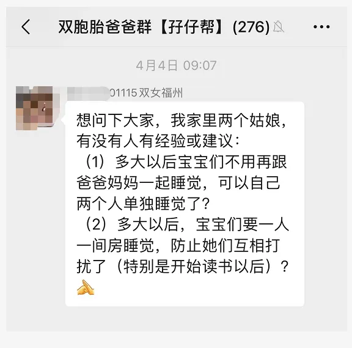

孖仔帮
公众号ID：twinsbang
关注
文|圆圈妈妈
网图|侵删
今天这篇来回答双胞胎爸爸群一位奶爸的求助，如图所示：
稍微提炼下，大概就两个问题：
1，从小一起睡的双胞胎，多大要分开睡？
2，双胞胎多大要与父母分开睡？
想必这也是很多双胞胎父母在养娃育儿时备受困扰的两大难题。
问题1：
从小一起睡的双胞胎，多大要分开睡？
如果是龙凤胎，毕竟男女有别，可在恰当时机，如三岁左右或者提早到2岁半，在两孩子准备好的时候，从分床睡开始慢慢过渡到分房睡。
如果是同性别的双胞胎，我认为，没有标准，如果非要有，那两孩子的实际需求就是唯一标准。
说说我们家圆圈兄弟的情况。
除了刚出生那会儿在新生儿科，被分开在不同病床，两兄弟从小都是睡在同一张床上。
一开始，两人睡一张小床，5个多月大，就跟我们挤一张1.5M的床，我带圆圆睡床尾，圆圈爸带圈圈睡床头。
期间还经历了多次换房，搬家，但唯一不变的是，他们俩一直雷打不动地跟我们睡在一起，一直到3岁。
实在太挤了，连打横睡都睡不下了，我们四个终于分床了，他们两兄弟睡一床，我和队友睡一床，但还是在同一个房间。
4岁半，买了上下铺，他们终于分床睡了，可是热乎劲不出三天，两人又嚷嚷着要睡在一起。
就在我们以为上下铺多此一举时，两人闹掰了，生气地睡回各自的窝。
就在我们庆幸还好买了上下铺时，他们两人又好上了，说一个人睡会睡不着，于是两人又抱在一起睡了。圈圈还很肉麻地补一句：”我不要离开我的哥啊，我要跟我哥睡啊！“
于是....这一对哥们，把上下床彻底玩疯了，高兴了一起睡，不爽了就各回各窝，有自己各自的秘密基地，也有彼此共享的空间，不知道多么惬意，一直到现在快7岁。
在此期间，我和圆圈爸从不干涉，从不过问，今晚谁睡上铺谁睡下铺，还是通通一起睡下铺.....都是他们说了算。
有趣的是...
他们俩要是睡在一起，起床后会互相踢对方，可能是抢被子或者抢枕头，然后大打出手，完全忘记昨晚他们睡在一起时多么亲密无间。
我时常很纳闷：难道这就是雄性动物？跟年龄没关系？
他们要是分上下铺睡，起床后会互相朝对方的窝里瞧一眼，确认过眼神后，又重新躺回去。
对双胞胎这种无语言干瞪眼的眼神交流，我的理解是：“早啊，哥/弟，你在啊，真好。”
双胞胎之间的情感纽带似乎比其他人所经历过的任何情感都来得深刻些。
也许就是这一层原因，特别是当双胞胎开始上学，父母们就会试图把他们分开行动，比如分开睡觉，分开在不同班级，分开找不同的朋友...
当然，这些都无可厚非，但为什么双胞胎就不能总黏在一起呢？为什么长大后就不能睡在一起呢？
如果他们愿意这样呢？
另，父母的出发点是什么呢？
是担心双胞胎之间的感情太过亲密，太依赖彼此，不利于成长？还是自己无意识地在和孩子们竞争这种亲密感。
如果是前者，那么别担心，他们最终还是会想要分开的，也许是4岁，5岁...或者就在某年某月的某一天，但不管怎么分开睡，当面对外界压力时，他们依旧会转向彼此，互求安慰。
就像圆圈兄弟那样，圈圈有时会害怕一个人睡，总是想尽办法求圆圆陪他睡，甚至不惜牺牲自己的玩具与圆圆交换一起睡的机会，而圆圆呢，一边骂骂咧咧地答应，一边把他的弟推到床里边，然后抱着他的圈弟弟一觉睡到大清早。
如果是后者，那么别多虑，他们依靠着彼此，也从彼此身上学到更多东西，这是多么令人羡慕而安全的关系啊！你为什么想要改变呢？
同性别的双胞胎，相对龙凤胎，养育指数可简单多了。什么时候分开睡？等就行了，等他们对想要自己睡充满期待了，再给他们创造环境，比如他们想要不同的房间，他们想要各自的小床...那么此时就应尽力去满足。
问题2：
双胞胎多大要与父母分开睡？
很多人说是3岁，也有专家说是6岁...
作为亲密育儿派的忠实践行者，我觉得年龄不是标准，还是顺其自然的好。一直到孩子们不想和我们大人一起睡了再分开。
其实孩子陪不了你多少年，他想自己睡了，你想和人家睡，人家也不跟你睡了，到那时，你求都求不来。
如果你是为了培养孩子的独立性才刻意与他们分开睡，那我建议你先关心下孩子的安全感是否充足。
英国著名的婴幼儿精神科医生维尼克特说过这样的话:“对小孩子来说，和母亲分离就意味着失去一切，和母亲有良好关系才能得到足够的安全感(被保护的安全感)。孩子只有带着这份安全感才能渐渐地从父母身边离开，越行越远。”
而多陪孩子睡觉就是培养孩子安全感最简单又有效的方式了。
孩子们在父母的陪伴下安然入睡，内心充盈了，有安全感了，有底气了，就能为未来的独立做好准备。
前面提到，圆圈兄弟一直跟我们睡到4岁半才独立睡自己的床，但有时候他们睡到后半夜，还会跑我们床上睡，很随意，很正常，我们从不拒绝，也从不过问原因。
孩子嘛大半夜睡不好还能有什么原因呢？
不外乎就是不适应了，想跟爸爸妈妈一起睡了；做噩梦了，想在爸爸妈妈的怀抱里找安慰了，理由很简单啊，那就满足呗。虽然清梦被扰很火大，但这样的“宠幸"还能有几年呢？
很多育儿专家都说：儿大避母，女大避父。
是的，要避，但得看避什么，如果要避睡觉，那我是不赞成的。
港真，若不是我们家的床太小挤不下，他们睡觉不老实影响到睡眠质量，我倒希望可以多陪他们睡觉，一直到他们想自己睡为止。
而不是像现在这样，有时当我想指定跟某个娃睡，那个娃就会嘟囔着说：“妈妈，你还是跟爸爸睡吧！我的床太小了，挤不下你了。”
我承认那一刻，我真的很失落。
知乎上有人问：哪一个瞬间觉得自己老了？
很多人说是看到自己眼角的皱纹那一刻开始。
而对我来说，那就是，孩子不让我抱了，拒绝跟我睡了，我才惊觉：孩子大了，我真的老了！
所以，想那么多干嘛呢？趁娃儿们还小，好好珍惜搂着他们睡觉的机会吧！
今日互动话题
#双胞胎分开睡还是一起睡？#
评论区聊一聊呗！
微信公众号：孖仔帮
ID : twinsbang
专注双胞胎孕育，养育，教育经验分享
扫码关注我们
点一下你会更好看耶

